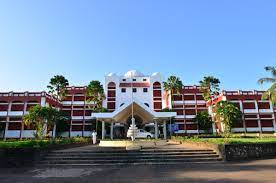

MES COLLEGE OF ENGINEERING

About Mes
MES College of Engineering, Kuttippuram was established in the year 1994, it was the first
engineering institution that was acclaimed under the self financing sector with minority status.
MESCE Kuttippuram is renowned for availing and providing technical education and offers admission
to all categories especially educationally backward classes. 8 degrees with 23 specialisations in the
fields of Engineering & Architecture, Management & Business Administration,
Sciences and Computer Application & Information Technology are offered by the MESCE Kuttippuram and the
entrance exams accepted by the institute are NATA, JEE Main, GATE, CAT, CMAT, and KMAT. According to
the NIRF 2023 report, over 105 graduated students were placed with a median salary of Rs 3,36,000
some of the top recruiters of the institute are Bosch, Amazon, HP, IBM, Infosys, Tata, SBI, and many more.
course details
| course |
duration |
fee |
| mca |
2 year |
120000 |
| mba |
2 year |
140000 |
| Btech |
4 year |
166000 |
| bba |
3 year |
120000 |
hostel
The college hostels are under the guidance and overall control of Joint Secretary MESCE.
Prof CP Muhammad (Former HoD, Department of Mechanical Engineering, MESCE), who is an academician
and administrator with having long experience of 45 years. Separate boys and girls hostel facility
is provided to ensure that the students have a comfortable atmosphere for work and play, a home away
from home. The Men’s Hostel (MH) with a capacity of 600 beds is situated outside the campus, about 500m
from the main block, near the Civil and Architecture Departments. The Ladies Hostel (LH) with a capacity
of 500 beds is situated within the main block campus.
The students are provided with shared rooms, which they share with their batchmates.
The first years are provided with a separate block, with separate facilities for both MH
and LH, to ensure their comfort and safety. Adequate common toilet facilities are provided at every floor.
The hostel opening and closing time for LH during weekdays is 6am and 6pm respectively and for MH
it is 6am and 8pm respectively. During weekends, the students should take prior permission to move
prohibited within the Campus.
Top
course details